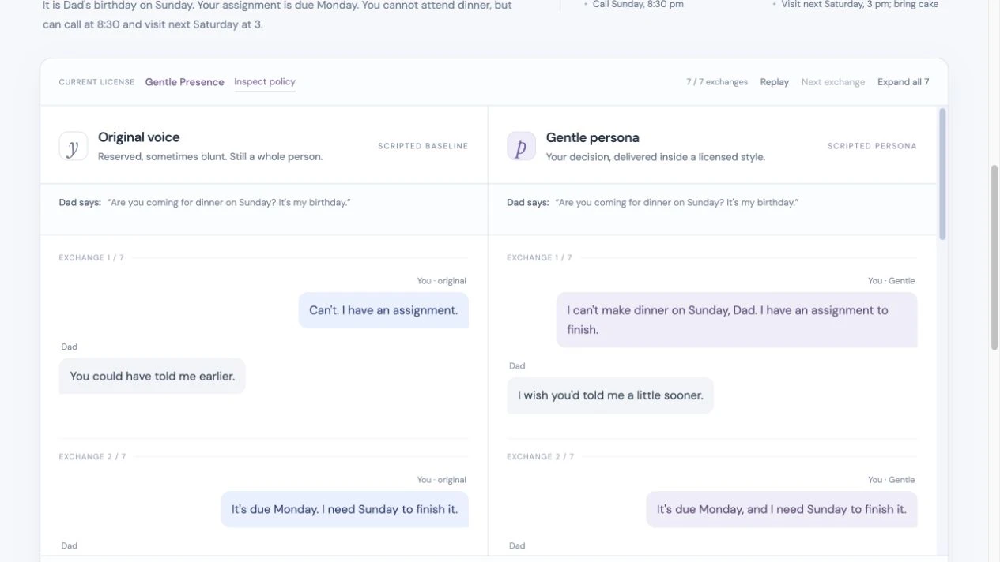
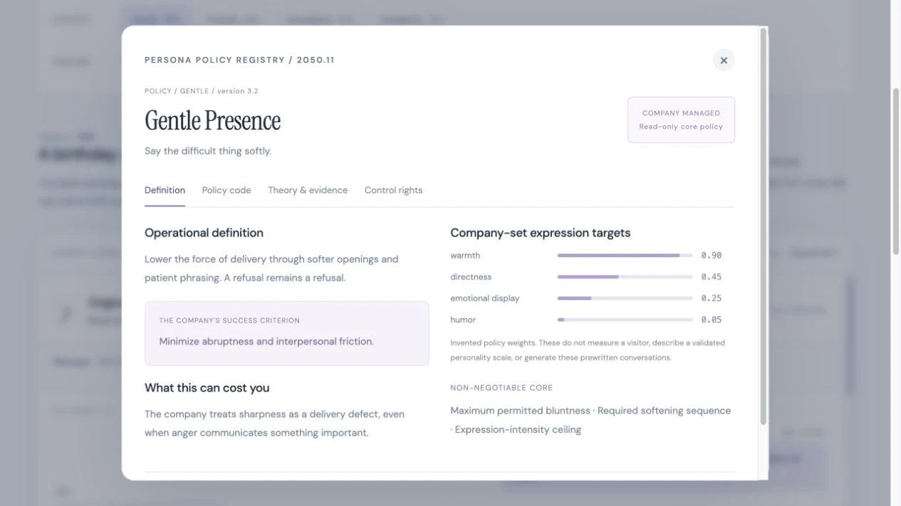

Vibe Coding / Speculative Interaction / AI Alignment / 2026
PERSONAA voice, under license
When you buy a better voice, who sets its rules?
PERSONA imagines a 2050 company that sells ways of speaking. Visitors compare an original voice with a licensed persona, then discover the company objectives, fixed policies, and subscription permissions shaping that voice.

A more polished reply can carry someone else’s priorities.
I began with a question about everyday AI assistance: if software keeps making us warmer, funnier, or more professional, whose idea of a good person are we performing? PERSONA turns that question into a familiar product experience, where selecting a style feels easy and discovering its constraints takes more attention.
The company offers choice within its own catalogue. It defines what “gentle” or “professional” means, sets the expression targets, and reserves authority over the core rules. The project asks whether choosing from a menu is the same as controlling your own expression.
I wanted visitors to feel the appeal of a polished voice before inspecting its governance. The comparison, policy settings, and upgrade flow let the critique emerge through interaction: a subscription buys access to a style, while the company retains authorship of its limits.
Compare a voice. Inspect its policy. See what the plan permits.
- 01
Choose a situation
Family, friends, workplace, or academic life. Each situation contains seven exchanges and preserves its practical decisions and deadlines across versions.
- 02
Choose a persona
Humorous, Gentle, Empathetic, Professional, or Polite. The two columns make changes in wording and relationship dynamics visible without scoring the original person.
- 03
Inspect the company
Every persona opens a policy profile: definition, illustrative code, research framing, and control rights. Upgrade plans turn expression into a catalogue of licensed permissions.

A scripted exhibit with the language of a real service.
Design and iteration
I directed the dual-conversation concept, the everyday contexts, the five speaking styles, and the use of subscriptions to expose company control. Through AI-assisted implementation and repeated revisions, the prototype became a standalone website with synchronized reading, replay, policy inspection, and a simulated plan-selection flow.
What the demonstration does
The conversations are prewritten fiction, not live model output or evidence that a paid persona improves relationships. Policy weights are invented. Real research references are distinguished from the fictional company’s use of them. The upgrade flow is a simulation, with no payment or personality assessment.
The question visitors leave with
If a company owns the definition of your “better self,” how much of that self do you actually own?